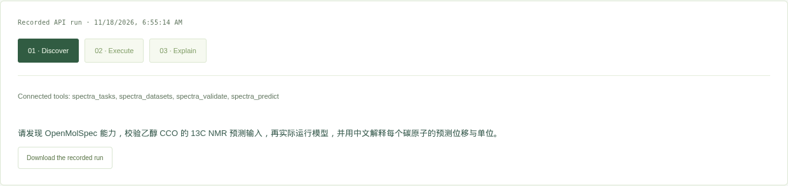
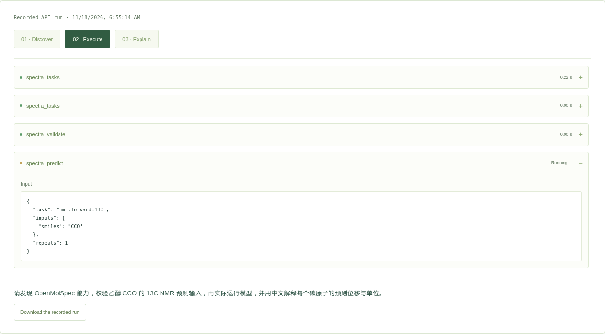
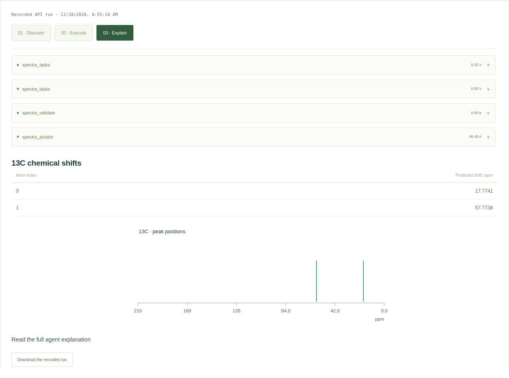

Experimental · External dataset
TransPeakNet HSQC
Expert-annotated C–H cross-peaks with original molecular structures and atom indices.
- Test spectra
- 479
- Distinct molecules
- 478
- Assigned carbon rows
- 7,310
NMR / MS/MS / IR / RAMAN
Predict molecular spectra, assign experimental peaks and explore the data behind each model.
Choose a workflow to run a model with your own data or a worked example.
Molecular input
Enter a molecular SMILES and choose the spectroscopy task.
CCOModel output, spectra and numerical values will appear here when the workflow is ready.
Learn the input fields and model settings in the task guides .
| Task guide | Input | Output |
|---|
Drag the orange oxygen to the outlined bond position.
Inspect measured peaks, molecular structures and acquisition conditions from eight dataset views.
Loading preview…
Loading molecular records…
Experimental · External dataset
Expert-annotated C–H cross-peaks with original molecular structures and atom indices.
| Dataset / view | Category | Description | Spectra | Molecules |
|---|
Counts describe each selected dataset view. See the data guide for source information, fields and train/test splits.
Replay a recorded ethanol analysis, from the first tool call to the predicted carbon shifts.
Loading the recorded tool sequence…



Connect the same tools to your own agent with the Agent Harness guide .
Follow an executed tutorial, explore a dataset schema, or bring OpenMolSpec into your Python and agent workflows.
Installation, your first spectrum and model calls.
Fields, sources, distributions and dataset splits.
Dataset readers, model interfaces and training.
Python, CLI and MCP tools for scientific agents.